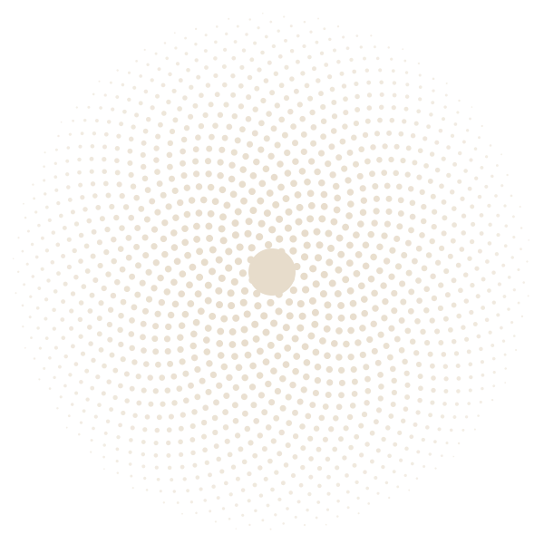

The insurance company already uses AI to read your fields. Neumeric puts that same verified evidence to work for you — stronger claims, faster payouts, and clearer decisions about when to sell.
Every season you prove what happened on your ground — how much you planted, what the hail took, what the crop is worth. Today that's phone calls, forms, and an adjuster who doesn't work for you.
A drone pass or a phone in your hand. Neumeric works from imagery you can already gather — no new hardware to babysit, no dashboards to learn.
Computer vision reads the crop and the ground the way the insurer's satellite would — stand loss, hail, disease, condition — and turns it into defensible ground truth.
The same evidence becomes a stronger claim, triggers an automatic payout, or feeds a clearer decision about when to sell. One loop, image to outcome.
We're early, and honest about it. The insurance advocate comes first — the rest is the road it opens.
TurboTax for crop insurance. We document your damage objectively, build a claim that's hard to deny, and catch the government program money the paperwork usually buries.
No adjuster, no dispute. A policy that pays out automatically the moment the imagery confirms a defined loss — the vision system is both the proof and the trigger.
We don't predict prices — nobody honestly can. We show you your real position from verified yield, against your basis, storage, and insurance floor, so you sell with a plan.
Insurers and grain buyers already use satellites, computer vision, and models to size up your ground and settle on their terms. The technology exists — it's just aimed at their bottom line.
Same caliber of evidence, pointed the other way. We don't just hand you a detection — we own the whole loop, from image to a paid claim, a payout, or a better sell. That's the part you feel.
Want verified ground truth on your side of the table? Tell us about your operation and we'll be in touch.
Request early access